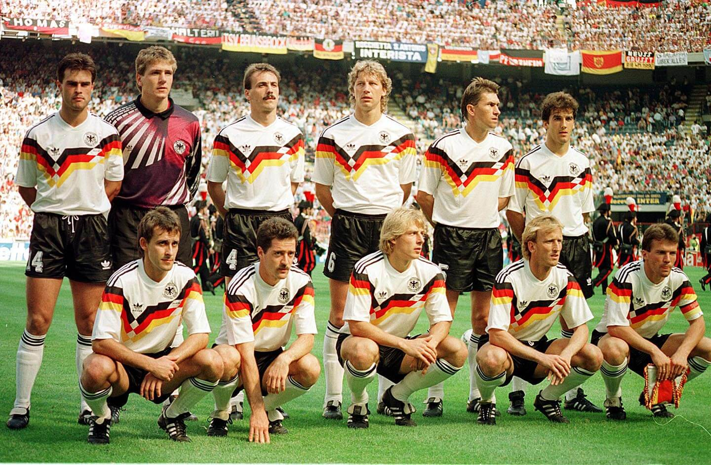

COPA DO MUNDO DE 1990

COPA DO MUNDO DE 1990
A Copa do Mundo FIFA de 1990 foi a décima quarta edição da Copa do Mundo FIFA de Futebol, que ocorreu de 8 de junho até 8 de julho de 1990. O evento foi sediado na Itália, tendo partidas realizadas nas cidades de Milão, Roma, Nápoles, Turim, Bari, Verona, Florença, Cagliari, Bolonha, Údine, Palermo e Gênova. A Itália foi o segundo país a sediar a competição por duas vezes (o primeiro foi o México, quatro anos antes). A Copa da Itália de 1990 reuniu, pela primeira vez, todos os times campeões mundiais: na época, Uruguai, Brasil, Inglaterra, Itália, Alemanha e Argentina. Ao contrário do que ocorrera nas edições anteriores, o Mundial de 90 foi marcado pelo forte sistema defensivo das seleções. As famosas 'retrancas' substituíram o futebol bem jogado e, salvo raras exceções individuais, como Maradona e Roger Milla, que comandou a surpreendente seleção camaronesa, os jogos, em sua maioria, foram decididos em lances raros de ofensividade. Tanto que, com uma média 2,21 gols por jogo, o Mundial da Itália amarga a pior marca da história das Copas. O selecionado camaronês, inclusive, protagonizou um dos melhores momentos do Mundial. A partida entre Camarões e Inglaterra, válida pelas quartas de final do certame, foi considerada a melhor da Copa da Itália. As duas equipes brigaram palmo a palmo por uma vaga nas semifinais. A Inglaterra abriu o marcador, mas Camarões chegou a virar o placar depois da entrada do veterano Roger Mila, com 40 anos de idade. Mas no final, os ingleses venceram por 3 a 2, com um gol do centroavante Gary Lineker.

Brasil decepciona
Se no geral, o nível técnico do Mundial da Itália não agradou, no Brasil, a cobrança foi ainda maior. Na fase de grupos, o selecionado brasileiro, capitaneado por Sebastião Lazzaroni, venceu os três jogos, contra Suécia, Costa Rica e Escócia, mas não conseguiu se livrar da desconfiança da crítica. O duro golpe veio cedo demais. Nas oitavas de final, a seleção brasileira encarou seu eterno arquirrival, que, àquela altura, também apresentava um futebol pobre. Enquanto o Brasil capengava apesar das vitórias, a Argentina sofria e se arrastava no Mundial... No campo, os brasileiros foram superiores, criaram mais chances e assustavam. Mas o polêmico clássico terminou com um resultado reverso graças ao contra-ataque. Aos 35 minutos do segundo tempo, Maradona deixou Dunga, Alemão, Ricardo Rocha e Mauro Galvão para trás e acionou Caniggia. Sozinho, o atacante driblou Taffarel, empurrou para o gol vazio e acabou com o sonho brasileiro.

Até àquela edição, apenas Brasil e Itália tinham conquistado três títulos mundiais. A Alemanha tinha um time forte e chegou ao seleto grupo. Não foi fácil, mas conseguiu impor sua força de seus convocados sobre os adversários. Comandados pelo ídolo Franz Beckenbauer, o segundo a conquistar o Mundial como jogador e treinador, além de Lothar Matthäus, Rudi Völler e Jürgen Klinsmann, os germânicos foram eficientes na defesa e no ataque. Foram sete jogos, com cinco vitórias e dois empates, com 15 gols marcados e apenas cinco sofridos. Após desfilar sua eficiência ao longo de toda competição, os alemães cruzariam com uma Argentina, que chegara à decisão com muitos problemas. Com jogos prolongados, ataque pouco eficiente e preciosismo de Goycochea, os Hermanos acumulavam dramas. Maradona estava em má forma física e Carlos Bilardo não podia contar com quatro jogadores por suspensão. Eram eles: Olarticoechea, Sergio Batista, Giusti e Caniggia. Quando a bola rolou, o prognóstico foi cumprido à risca. Melhor, mais completa e com peças de desequilíbrio, a Alemanha foi ao ataque e desperdiçou a chance de definir a partida no primeiro tempo. Foram oito oportunidades apenas na etapa inicial. Os argentinos permaneciam acuados e inofensivos. No segundo tempo, a situação se repetiu e os germânicos ainda tiveram mais facilidade. Aos 20 minutos, a Albiceleste expôs o descontrole emocional e o nervosismo. Monzón tinha entrado no intervalo e foi expulso após cometer falta dura em Klinsmann. A vitória alemã, apesar da vantagem numérica, veio apenas nos minutos finais. Em pênalti polêmico aos 40 minutos, Sensini cometeu falta em Rudi Völler. Na cobrança, Brehme colocou a bola no canto e garantiu a vitória simples e o tricampeonato.
